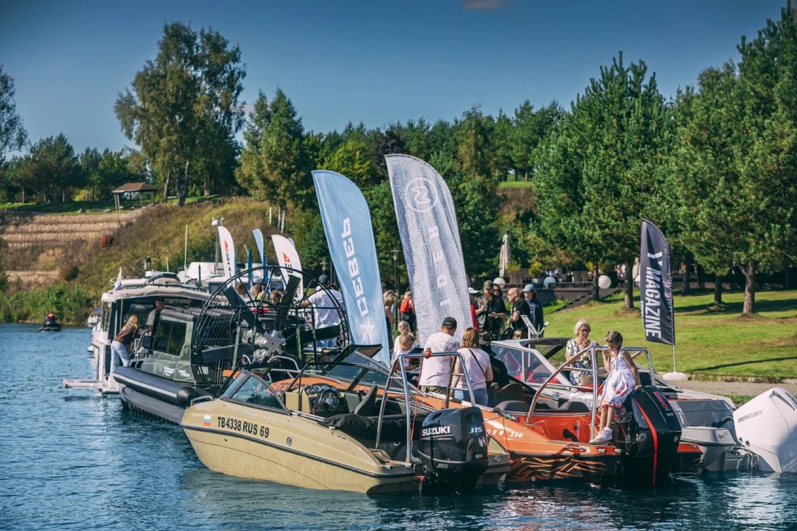

Выставки катеров и яхт, мероприятия и тест-драйвы 2026

Наступивший 2026 год обещает стать насыщенным и ярким. Яхтенная индустрия не просто развивается - она бурлит, создавая уникальную среду для профессионалов, любителей и всех, кто выбирает для себя отдых на воде.
От Москвы до Владивостока, с ранней весны до поздней осени - нас ждет калейдоскоп мероприятий: от глобальных международных выставок, где задаются тренды всей отрасли, до камерных региональных смотров, тест-драйвов и фестивалей, создающих атмосферу водномоторного единства. Укрепляется тенденция к интерактивности: все больше мероприятий предлагают не просто статичную экспозицию, а возможность личного тест-драйва, мастер-классов от экспертов и площадок для живого обмена опытом.
Календарь событий 2026 года формируется прямо сейчас. Следите за обновлениями в этом разделе, мы будем публиковать даты и локации ключевых выставок в течение всего года.
До встречи на воде!
Календарь 2026
Зы-Зы-Зы SUP-challenge.Московская область, Истринский район.
59-я международная выставка-ярмарка «Охота и рыболовство на Руси».Москва, ВДНХ.